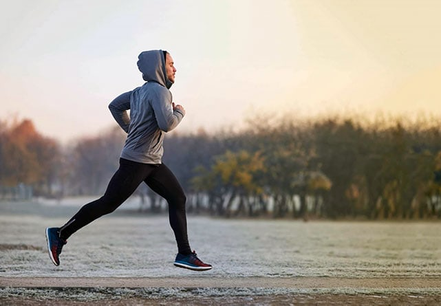
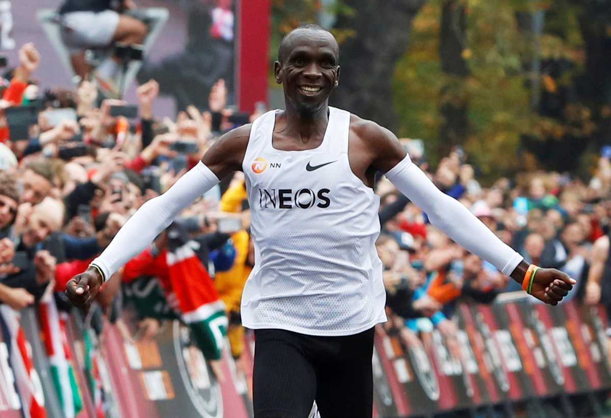
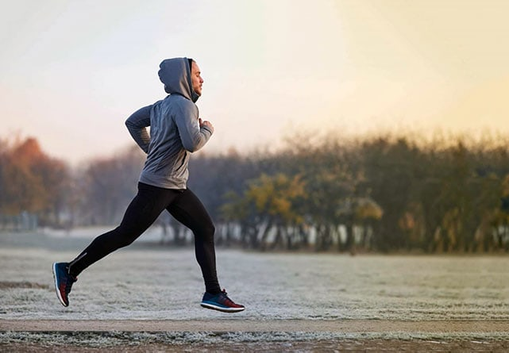
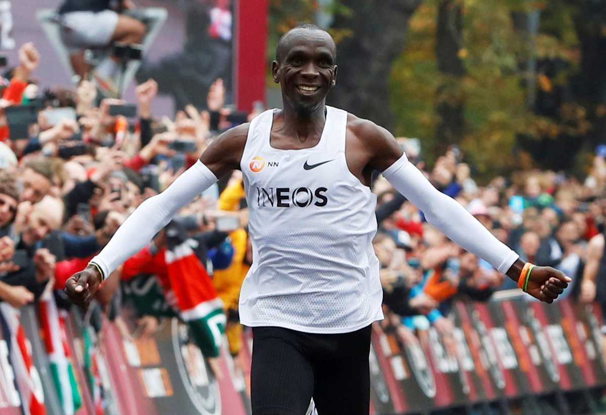

Бег
Старт
Информация о моих навыках
Мои навыки
Информация о лучшем бегуне
Элиуд Кипчоге (род. 5 ноября 1984, Капсисива, Рифт-Валли, Кения) — кенийский бегун-стайер, двукратный олимпийский чемпион в марафоне (2016 и 2020).
Информация о моих навыках
Бег
Элиуд Кипчоге (род. 5 ноября 1984, Капсисива, Рифт-Валли, Кения) — кенийский бегун-стайер, двукратный олимпийский чемпион в марафоне (2016 и 2020).
